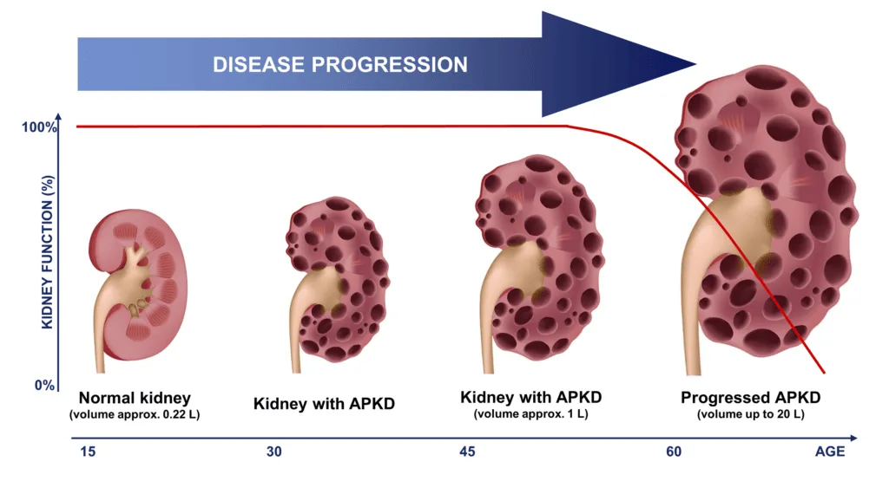

Expanded Nursing Uganda Explanation
Polycystic Kidney disease (PKD) should be understood beyond a short definition. Link the concept to patient history, focused assessment, common risks, nursing priorities, documentation and evaluation of outcomes.
01 Overview
Polycystic Kidney Disease (PKD) is a genetic disorder characterized by the growth of numerous fluid-filled cysts within the kidneys. These cysts are non-cancerous but can grow very large and multiply, progressively replacing much of the normal kidney tissue.
- Progressive Nature: PKD is a progressive disease. Over time, the expanding cysts impair the kidneys' ability to filter waste products from the blood, leading to kidney enlargement and a gradual decline in kidney function.
- Systemic Involvement: While primarily affecting the kidneys, PKD is a systemic disease. It can cause cysts and other abnormalities in various other organs, including the liver, pancreas, spleen, ovaries, and brain, and is associated with cardiovascular complications.
- Genetic Basis: PKD is one of the most common inherited kidney diseases. Its presence is due to specific gene mutations that affect protein production critical for kidney and other organ development and function.
There are two major forms of PKD, differentiated by their genetic inheritance patterns, typical age of onset, and clinical severity:
- Inheritance Pattern: ADPKD is the most common inherited kidney disease, accounting for about 90% of all PKD cases. It is inherited in an autosomal dominant manner. This means that if an individual inherits just one copy of the mutated gene from either parent, they will develop the disease. Each child of an affected parent has a 50% chance of inheriting the mutated gene and thus the disease.
- Genetic Basis: The vast majority of ADPKD cases (approximately 85%) are caused by mutations in the PKD1 gene , located on chromosome 16. A smaller percentage (about 15%) are caused by mutations in the PKD2 gene , located on chromosome 4. Very rarely, mutations in other genes can cause ADPKD-like phenotypes.
- Age of Onset: ADPKD typically manifests in adulthood , usually between the ages of 30 and 50, although cysts can be present from birth and symptoms can appear earlier or later.
- Clinical Course: Characterized by bilateral renal cysts that gradually increase in size and number. This leads to progressive renal failure, with about 50% of patients developing end-stage renal disease (ESRD) by age 60. Extra-renal manifestations (e.g., liver cysts, intracranial aneurysms) are common.
- Prevalence: Affects approximately 1 in 400 to 1 in 1,000 live births, making it the most common hereditary kidney disease.
- Inheritance Pattern: ARPKD is much rarer than ADPKD. It is inherited in an autosomal recessive manner. This means an individual must inherit two copies of the mutated gene (one from each parent) to develop the disease. Parents are typically unaffected carriers.
- Genetic Basis: ARPKD is caused by mutations in the PKHD1 gene (Polycystic Kidney and Hepatic Disease 1), located on chromosome 6. This gene encodes fibrocystin, a protein important for kidney and bile duct development.
- Age of Onset: ARPKD typically manifests in infancy or childhood , often presenting in utero or shortly after birth.
- Clinical Course: Characterized by enlarged, cystic kidneys that can be detected prenatally. Renal cysts are typically much smaller and more numerous than in ADPKD, giving the kidneys a "sponge-like" appearance. ARPKD is also strongly associated with congenital hepatic fibrosis (scarring of the liver) and portal hypertension. Lung hypoplasia can occur in severe prenatal cases due to extreme kidney enlargement reducing fetal lung space. Progression to ESRD often occurs in childhood or adolescence.
- Prevalence: Affects approximately 1 in 20,000 to 1 in 40,000 live births.
- Feature Autosomal Dominant PKD (ADPKD) Autosomal Recessive PKD (ARPKD)
- Inheritance Autosomal Dominant (one mutated gene copy) Autosomal Recessive (two mutated gene copies)
- Prevalence Common (1:400-1:1000) Rare (1:20,000-1:40,000)
- Genetic Loci PKD1 (85%), PKD2 (15%) PKHD1
- Age of Onset Typically adulthood (30-50 years), but can vary Infancy/childhood, often prenatal/neonatal
- Kidney Cysts Fewer, larger, macroscopic cysts Many, smaller, microscopic cysts ("sponge-like" appearance)
- Renal Prognosis ESRD by age 60 in ~50% of patients ESRD often in childhood/adolescence; variable severity
- Liver Involvement Cysts are common, but functional impairment is rare Congenital Hepatic Fibrosis and portal hypertension are characteristic and can be severe
- Other Organs Intracranial aneurysms, pancreatic cysts, diverticulosis Lung hypoplasia (due to severe renal enlargement in utero )
The etiology of PKD is purely genetic, driven by specific mutations that disrupt key cellular processes. The pathophysiology describes the cascade of events initiated by these genetic defects, leading to cystogenesis and ultimately organ dysfunction.
Both ADPKD and ARPKD are caused by mutations in specific genes that encode proteins crucial for normal kidney development and function. These proteins are often involved in cell-cell and cell-matrix interactions, mechanosensation, and cell signaling.
- PKD1 Gene Mutation: Accounts for approximately 85% of ADPKD cases.
- Located on chromosome 16p13.3.
- Encodes for Polycystin-1 (PC1) , a large integral membrane protein.
- PC1 is thought to function as a receptor involved in cell-cell and cell-matrix adhesion, signal transduction, and mechanosensation (detecting fluid flow within renal tubules).
- Mutations in PKD1 generally lead to a more severe disease phenotype and earlier onset of ESRD compared to PKD2 mutations.
- PKD2 Gene Mutation: Accounts for approximately 15% of ADPKD cases.
- Located on chromosome 4q21.
- Encodes for Polycystin-2 (PC2) , a smaller integral membrane protein that functions as a non-selective cation channel (particularly for calcium).
- PC2 interacts with PC1, forming a complex that is believed to play a critical role in the primary cilia of renal tubular cells, acting as a mechanosensor.
- Mutations in PKD2 typically result in a milder disease course and later onset of ESRD.
- PKHD1 Gene Mutation: Accounts for nearly all cases of ARPKD.
- Located on chromosome 6p12.2.
- Encodes for Fibrocystin (also known as Polyductin) , a large integral membrane protein with unknown precise function but localized to primary cilia and basal bodies of renal collecting duct cells and biliary epithelial cells.
- Fibrocystin is believed to be important for cell-cell adhesion and proper tubular/ductal morphogenesis during development.
Despite different genetic origins, the pathophysiology of cyst formation in both ADPKD and ARPKD shares common cellular pathways. The "two-hit hypothesis" is central to understanding cyst initiation in ADPKD.
- Individuals with ADPKD inherit one mutated copy of either PKD1 or PKD2 .
- The "first hit" is the inherited germline mutation.
- The "second hit" is a somatic (acquired during life) mutation in the remaining normal copy of the gene in a specific renal tubular epithelial cell.
- Once both copies of the gene are mutated (loss of heterozygosity) in that single cell, it loses normal control mechanisms and initiates uncontrolled proliferation and fluid secretion, leading to cyst formation. This explains why cysts develop focally and progressively over time.
- Abnormal Cell Proliferation: Mutations in polycystins lead to dysregulation of cell cycle control. Affected renal tubular epithelial cells proliferate excessively, forming focal out-pouchings or dilatations of the renal tubules.
- Disrupted Fluid Secretion: Instead of maintaining the normal reabsorption/secretion balance, cystic epithelial cells actively secrete fluid into the cyst lumen. This secretion is driven by dysregulated chloride channels and subsequent osmotic water movement, causing the cyst to expand rapidly.
- Extracellular Matrix (ECM) Abnormalities: Structural integrity of renal tubules is compromised. Breakdown of basement membrane and alterations in ECM allow for outward budding and expansion of cysts.
- Inflammation and Fibrosis: Growing cysts compress adjacent normal kidney tissue, leading to local ischemia, inflammation, and fibrogenic pathways. This results in interstitial fibrosis (scarring) and tubular atrophy, driving progressive kidney function decline.
- Primary Cilia Dysfunction: Polycystin-1 and Polycystin-2 act as mechanosensors on primary cilia. When fluid flows through tubules, cilia bend, activating the PC1/PC2 complex and calcium influx. In ADPKD, mutations disrupt this mechanosensation and calcium signaling, leading to unchecked cell growth and altered fluid transport.
- Renal Enlargement: Progressive growth of cysts causes kidneys to become enormously enlarged, displacing abdominal organs.
- Developmental Defects: Due to the severe nature of the PKHD1 mutation (two copies affected), defects are often apparent in utero .
- Collecting Duct Involvement: Cysts primarily arise from collecting ducts, leading to diffuse involvement. Cysts are smaller and more numerous ("sponge-like").
- Hepatic Fibrosis: Fibrocystin is expressed in bile ducts. Mutations lead to malformations and dilatations of intrahepatic bile ducts (Caroli's disease or congenital hepatic fibrosis), resulting in progressive liver fibrosis and portal hypertension.
- Hypertension: Caused by activation of the renin-angiotensin-aldosterone system (RAAS) due to localized ischemia and compression of renal vasculature.
- Pain: Due to enlargement, rupture, hemorrhage, or infection.
- Extra-renal Manifestations: Cysts in other organs (liver, pancreas, spleen) and structural abnormalities like intracranial aneurysms.
ADPKD is characterized by a gradual onset of symptoms, typically in adulthood.
- Pain: Most frequent symptom. Flank or Abdominal Pain: Chronic, dull, aching, due to sheer size of enlarged kidneys.
- Acute Pain: Can result from Cyst Hemorrhage/Rupture (sudden, severe), Cyst Infection (fever, chills), or Nephrolithiasis (kidney stones).
- Back Pain: Due to enlarged kidneys or musculoskeletal issues.
- Hypertension: One of the earliest manifestations (60-70% of patients), often preceding renal dysfunction. Accelerates kidney function decline and cardiovascular morbidity.
- Hematuria: Gross Hematuria: Visible blood, often episodic from cyst rupture.
- Microscopic Hematuria: Asymptomatic, detected on urinalysis.
- Recurrent UTIs or Cyst Infections: ADPKD patients are prone to UTIs which can ascend and infect cysts (difficult to treat).
- Palpable Abdominal Masses: Large, firm, nodular masses in the flanks.
- Progressive Renal Insufficiency/Failure: Gradual decline in GFR, leading to ESRD in ~50% of patients by age 60.
- Liver Cysts (Polycystic Liver Disease - PLD): Occurs in 80-90% of patients by age 60. More severe in women (estrogen influence). Usually asymptomatic but can cause mass effect symptoms.
- Intracranial Aneurysms (ICAs): Occur in 5-10% (up to 25% with family history). Risk of rupture leading to subarachnoid hemorrhage.
- Cardiac Abnormalities: Left Ventricular Hypertrophy (LVH), Valvular Heart Disease (Mitral valve prolapse), Aortic Root Dilatation.
- Hernias and Abdominal Wall Defects: Inguinal, umbilical, incisional hernias.
- Pancreatic Cysts: Often small and insignificant.
- Diverticulosis: Increased incidence in the colon.
Much more severe, often presenting in utero or shortly after birth.
- Large, Bilateral Palpable Renal Masses: Kidneys massively enlarged, filling abdominal cavity.
- Pulmonary Hypoplasia: Major cause of mortality. Massively enlarged kidneys compress lungs in utero . Leads to respiratory distress at birth.
- Oligohydramnios/Anhydramnios: Reduced amniotic fluid due to lack of fetal urine production. Contributes to pulmonary hypoplasia and Potter sequence.
- Renal Insufficiency/Failure: Can be present at birth requiring dialysis.
- Hypertension: Common and often severe.
- Chronic Kidney Disease (CKD) Progression: Gradual decline leading to ESRD. Growth retardation, anemia, bone disease.
- Hypertension: Persistent and challenging.
- Hepatic Fibrosis and Portal Hypertension (Congenital Hepatic Fibrosis - CHF): A defining feature. Leads to Hepatomegaly/Splenomegaly, Esophageal Varices (risk of bleeding), Ascites, and Cholangitis.
- Growth Failure.
- Modality Description & Findings
- Renal Ultrasound Role: First-line diagnostic tool. Non-invasive. ADPKD Findings: Multiple bilateral cysts. Diagnostic criteria based on age/cyst number. ARPKD Findings: Enlarged, hyperechogenic kidneys with poor corticomedullary differentiation. Oligohydramnios prenatally.
- CT Scan Role: More sensitive for smaller cysts and quantifying volume. Use: Assessing complications (hemorrhage, infection) and calculating Total Kidney Volume (TKV) for prognosis.
- MRI Scan Role: Highly sensitive. Gold standard for monitoring disease progression (cyst growth/volume) in clinical trials. Use: Visualizing complex cysts and detecting intracranial aneurysms.
- Blood Tests: Serum Creatinine & BUN (kidney function), Electrolytes, Hemoglobin/Hematocrit (anemia), Liver Function Tests (hepatic involvement).
- Urinalysis: Hematuria, Proteinuria, Pyuria/Bacteriuria, Specific Gravity.
- Urine Culture: If UTI or cyst infection suspected.
- Indications: Atypical presentation (no family history, early onset), ARPKD confirmation, Preimplantation Genetic Diagnosis (PGD), Living related kidney donors (to rule out preclinical disease), Prognostic information.
- Methods: DNA Sequencing of PKD1, PKD2 (ADPKD) and PKHD1 (ARPKD).
- Intracranial Aneurysm Screening: MRA of brain for high-risk ADPKD patients.
- Cardiovascular Assessment: BP monitoring, echocardiography.
- Blood Pressure Control: Goal: < 130/80 mmHg (or < 120/80).
- Pharmacology: ACE inhibitors or ARBs are first-line (renoprotective, counteract RAAS).
- Pain Management: Acute: Opioids (short-term), Acetaminophen. Caution with NSAIDs (worsen kidney function).
- Chronic: Non-pharmacological (heat, massage), pain specialists, surgical cyst decompression (refractory cases).
- Dietary and Lifestyle: Hydration (2-3 L/day) to suppress vasopressin.
- Sodium Restriction, Protein Restriction (in advanced CKD).
- Low-Oxalate diet (if stones), Caffeine avoidance (possible benefit).
- Smoking cessation, Regular exercise.
- Infection Management: Prompt antibiotics. Lipophilic antibiotics (e.g., fluoroquinolones) preferred for cyst penetration.
- Kidney Stone Management: Fluids, alpha-blockers, lithotripsy.
- Mechanism: Blocks V2 receptors, reducing cAMP production and fluid secretion into cysts, slowing growth.
- Indications: Rapidly progressive ADPKD.
- Side Effects: Aquaretic effect (polyuria, thirst), risk of liver injury (requires LFT monitoring).
- Polycystic Liver Disease: Somatostatin analogues, surgical decompression, or liver transplant for severe cases. Avoid estrogens.
- Intracranial Aneurysms: Screening/monitoring. Surgical clipping/coiling if indicated.
- Neonatal: Respiratory support (ventilation), Renal Replacement Therapy (RRT), aggressive BP control, nutritional support.
- Congenital Hepatic Fibrosis: Monitor for portal hypertension, sclerotherapy for varices, shunt surgery, liver transplantation.
- Dialysis: Hemodialysis or Peritoneal Dialysis.
- Kidney Transplantation: Preferred treatment. May require native nephrectomy if kidneys are too large/infected.
- 1. Impaired Urinary Elimination Related to: Kidney cyst formation, reduced concentrating ability.
- Evidenced by: Polyuria, nocturia, hematuria.
- Interventions: Monitor output, encourage fluids, pain management.
- 2. Risk for Fluid Volume Excess Related to: Decreased GFR.
- Evidenced by: Edema, hypertension, weight gain.
- Interventions: Fluid/sodium restriction, daily weights, diuretics.
- 3. Risk for Electrolyte Imbalance Specifics: Hyperkalemia, hyperphosphatemia.
- Interventions: Monitor labs, dietary mods.
- 4. Chronic Pain Related to: Capsule distention, cyst rupture.
- Interventions: Analgesics (avoid NSAIDs), heat/cold therapy.
- 5. Risk for Infection Related to: Cystic lesions, urinary stasis.
- Interventions: Monitor vitals, antibiotics, hygiene.
- 6. Fatigue Related to: CKD, anemia, poor sleep.
- Interventions: Manage anemia, rest periods.
- 7. Risk for Ineffective Cerebral Tissue Perfusion Related to: Intracranial aneurysm rupture.
- Interventions: Monitor BP, screen for headaches/neuro changes.
- 8. Risk for Ineffective Health Maintenance Related to: Complex management, lack of knowledge.
- Interventions: Education on diet/meds/follow-up.
- 9. Excessive Anxiety Related to: Genetic nature, fear of kidney failure.
- Interventions: Active listening, support groups.
- 10. Compromised Family Coping Related to: Hereditary nature, guilt, caregiver burden.
- Interventions: Family meetings, counseling.
- 11. Inadequate Health Knowledge (Tolvaptan) Interventions: Educate on liver toxicity signs, need for hydration.
- 12. Risk for Inadequate Fluid Volume Related to: Aquaretic effect of Tolvaptan.
- Interventions: Emphasize fluid intake.
- 13. Impaired Gas Exchange Related to: Pulmonary hypoplasia.
- Interventions: Ventilatory support, positioning.
- 14. Inadequate Protein Energy Intake Related to: Anorexia, compression.
- Interventions: Nutritional support (NG tube), supplements.
- 15. Risk for Bleeding Related to: Esophageal varices (portal hypertension).
- Interventions: Monitor for hematemesis/melena.
Comprehensive care addressing physiological, psychological, and educational needs.
- Monitor Renal Function/Fluid Balance: I&O, daily weights, lab values (Creatinine, Electrolytes), signs of overload/deficit.
- Manage Hypertension: Administer ACE/ARBs, educate on BP control and sodium restriction.
- Pain Management: Assess pain, administer non-nephrotoxic analgesics, use heat/cold, positioning.
- Prevent/Manage Infections: Monitor urine/fever, administer antibiotics, promote hygiene.
- Address Fatigue: Manage anemia, plan activities.
- Intracranial Aneurysm (ICA) Education: Teach signs of rupture (sudden severe headache), strict BP control.
- Liver Cysts (PLD): Monitor for abdominal distension/pain, avoid estrogens.
- Disease Education: Genetics, progression, Tolvaptan specifics (liver monitoring, thirst).
- Psychosocial Support: Listen to fears, refer for genetic counseling, connect with support groups.
- Prepare for RRT: Early discussions on dialysis/transplant.
- Respiratory Support: Monitor status, ventilation.
- Nutritional Management: Growth charts, specialized formulas, NG feeds.
- Monitor for Bleeding: Signs of variceal bleeding.
- Promote Development: Age-appropriate activities.
- Promotes Adherence: To meds and lifestyle changes.
- Facilitates Self-Management: BP monitoring, symptom recognition.
- Reduces Anxiety: Demystifies disease, empowers patients.
- Enables Informed Decision-Making: Treatment choices, family planning.
- Improves Quality of Life.
- Disease Process: Genetics, prognosis.
- Medication Management: Antihypertensives, Tolvaptan protocols, antibiotic adherence.
- Lifestyle Modifications: Diet (sodium/fluid/protein), BP monitoring, exercise.
- Symptom Management: Recognizing infection, aneurysm rupture, bleeding.
- ESRD Management: Dialysis vs. Transplant.
- Psychosocial: Coping strategies, genetic counseling.
Essential for addressing medical, psychological, and familial implications.
- Information Provision: Diagnosis, Inheritance (Dominant 50% vs Recessive 25%), Prognosis.
- Risk Assessment: For affected individuals and relatives.
- Genetic Testing Guidance: Discussion of options, informed consent, predictive testing.
- Psychosocial Support: Addressing guilt/fear, family communication.
- Newly diagnosed individuals.
- Family history (at-risk adults, potential donors).
- Atypical presentation.
- Family Planning (Prenatal diagnosis, PGD).
- Pediatric cases.
- Confidentiality.
- Non-directiveness.
- Impact on family members ("right to know").
- Genetic discrimination.
- Testing of minors (generally deferred for adult-onset ADPKD).
02 Nursing Uganda Clinical Lens
Use Polycystic Kidney disease (PKD) as a practical nursing topic, not only a memorized definition. Start with normal structure and function, then connect it to assessment findings and disease.
- What to understand first: define polycystic kidney disease (pkd), identify the normal or expected pattern, then explain what changes when the patient is unwell.
- Why it matters in care: the nurse must recognize risk early, explain findings clearly, document accurately and know when to escalate.
- How to revise it: connect each point to assessment, nursing diagnosis or care problem, intervention, rationale and evaluation.
03 Assessment Guide
- Relevant inspection, palpation, movement, auscultation, vital signs or neurological checks.
- Normal findings, abnormal findings and what each abnormality may indicate.
- Patient history, risk factors and how the body system affects other systems.
04 Nursing Priorities, Rationales and Outcomes
- Use anatomy to explain symptoms and guide focused assessment.
- Recognize findings that need urgent escalation.
- Teach the patient using simple body-system language.
The rationale for these priorities is patient safety: nursing actions should prevent deterioration, reduce discomfort, support recovery and create clear evidence for the next caregiver.
- Expected outcome: The learner can explain normal function, identify abnormal signs and connect them to nursing action.
05 Patient Teaching and Revision Check
- Explain polycystic kidney disease (pkd) in simple language the patient or caregiver can repeat back.
- Teach warning signs, medicine or follow-up instructions, hygiene or lifestyle points where relevant.
- For exams, prepare a short answer using: definition, causes or risk factors, signs, assessment, management, complications and prevention.
- For ward practice, document baseline findings, actions taken, patient response and the plan for review.
Illustrations and Diagrams (1)

Related Video Lectures
Watch nursing lecture videos on YouTube for this topic. Opens in a new tab.
Watch on YouTubeExternal link: YouTube may use its own cookies and terms. Nursing Uganda is not affiliated with YouTube.